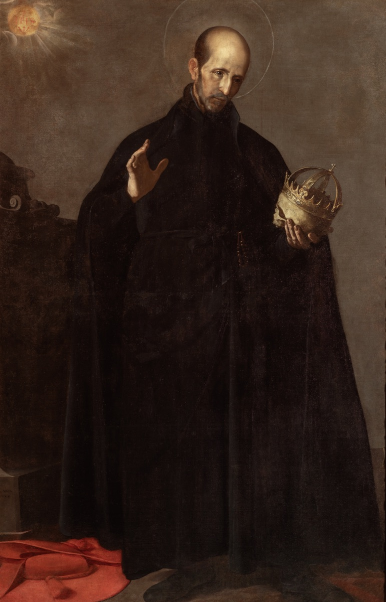

Utemeljitelji i rano razdoblje reda
Vrhovni poglavar · Svećenik
Sv. Franjo Borgija
1510. – 1572.
Suprug, otac i vojvoda Gandíje postao je isusovački svećenik i treći vrhovni poglavar Družbe. Iskustvo javnih odgovornosti poslije je usmjerio prema odgoju redovnika, školama i misijama diljem svijeta.

Izvor slike
- Spomendan
- 10. listopada
- Zaštitništvo
- Nije navedeno u izvoru
- Životni vijek
- 1510. – 1572.
- Djelovanje
- Misije i evangelizacija · Obrazovanje i poučavanje vjere · Obitelj i gubitak bližnjih
- Razdoblje
- 16. stoljeće
- Slavi se
- 10. listopada
Životopis
Sveti Franjo Borgija bio je suprug i otac osmero djece, potkralj Katalonije i vojvoda Gandíje, a potom isusovački svećenik i treći vrhovni poglavar Družbe Isusove. Živio je od 1510. do 1572. godine. Iskustvo upravljanja stečeno na dvoru i obiteljskim posjedima poslije je upotrijebio za odgoj redovnika, osnivanje škola i širenje misija. Uz javne odgovornosti njegov su život obilježavali molitva, duhovne vježbe i nastojanje da ostane vjeran pozivu koji je prihvatio.
Obitelj i služba na carskome dvoru
Rođen je 28. listopada 1510. u Gandíji, u Kraljevini Valenciji. Njegov otac Juan de Borja bio je vojvoda Gandíje, a majka Ivana Aragonska potjecala je iz vladarske obitelji. Po očevoj je lozi bio praunuk pape Aleksandra VI., a po majčinoj kralja Ferdinanda Aragonskoga. U španjolskom je svijetu nosio obiteljsko ime Borja, poznato i u talijanskom obliku Borgia.
Nakon majčine smrti dio je mladosti proveo u Zaragozi. Obrazovao se za dužnosti koje su se očekivale od plemića: učio je, bavio se glazbom i upoznavao dvorski život. Neko je vrijeme studirao filozofiju. Potom je služio na dvoru cara Karla V., gdje je stekao njegovo povjerenje i primao sve odgovornije zadaće.
Godine 1529. oženio se portugalskom plemkinjom Leonorom de Castro, damom u službi carice Izabele. Imali su pet sinova i tri kćeri. Njihov obiteljski život godinama se odvijao u blizini vladarskoga para. Franjo je obavljao dvorske službe, a istodobno nosio odgovornost za suprugu, djecu i obiteljska dobra.
Smrt carice i upravljanje Katalonijom
Kada je carica Izabela umrla 1539., Franjo je pratio njezino tijelo do Granade. Uz taj se događaj veže poznata predaja o otvaranju lijesa radi potvrde pokojničina identiteta i snažnom dojmu koji je na njega ostavila prolaznost vladarske ljepote i moći. Taj je spomen postao dio njegove duhovne baštine. Nakon pogreba nastavio je obavljati javne dužnosti, a odluka o redovničkom životu sazrijevala je još godinama.
Od 1539. do 1543. bio je potkralj Katalonije. Vodio je poslove pokrajine, nastojao održati javni red i suzbijati razbojništvo. U Barceloni je upoznao različite ljude crkvene obnove, među njima Petra Fabra, jednoga od prvih Ignacijevih suradnika. Susret s mladom Družbom Isusovom postupno je prerastao u trajniju povezanost.
Nakon očeve smrti Franjo je postao četvrti vojvoda Gandíje i vratio se upravljanju svojim posjedima. Podupirao je isusovački kolegij u Gandíji, gdje je poslije i sam studirao teologiju. U tome su razdoblju molitva, sakramenti i duhovno savjetovanje imali sve važnije mjesto uz njegove obiteljske i upravne dužnosti.
Udovac na putu u Družbu Isusovu
Leonora je umrla 27. ožujka 1546. Franjo je nakon njezine smrti obavio duhovne vježbe uz vodstvo isusovca Andrije de Ovieda. Odlučio se pridružiti Družbi Isusovoj, ali je prije javnoga napuštanja vojvodskoga položaja morao urediti poslove i skrb za djecu. Ignacije Loyolski pratio je taj postupni prijelaz.
Godine 1548. položio je isusovačke zavjete, zadržavajući neko vrijeme svjetovno odijelo i upravu nad svojim dobrima. Nastavio je teološki studij i pripremao prijenos nasljedstva. Godine 1550. otputovao je u Rim, gdje je nekoliko mjeseci boravio s Ignacijem i uređivao svoj budući život u Družbi.
Vrativši se u Španjolsku, odrekao se vojvodskih prava u korist najstarijega sina Carlosa. Za svećenika je zaređen 1551. godine. Prvih se godina osobito posvetio propovijedanju i pisanju o duhovnome životu. Dotadašnji dvorjanin i vojvoda prihvatio je službu svećenika, ali su njegove organizacijske sposobnosti ubrzo bile potrebne i na drugim područjima.
Kolegiji i odgoj novih isusovaca
Ignacije ga je 1554. imenovao generalnim povjerenikom Družbe za Španjolsku i Portugal. Jedna od glavnih zadaća bila mu je podupirati otvaranje kolegija. Trebalo je pronaći sredstva, surađivati s dobročiniteljima i vlastima te osigurati ljude koji će poučavati. Franjo je mogao povezivati iskustvo upravljanja s poznavanjem nove redovničke zajednice.
Važno mjesto pridavao je i novicijatu, razdoblju u kojem su se kandidati pripremali za redovnički život. U Simancasu je 1554. osnovana posebna kuća za novake. Mladi isusovci trebali su upoznati Družbin način molitve, služenja i zajedničkoga života prije nego što preuzmu šire apostolske obveze.
Franjo je ostao povezan s carem Karlom V. i nakon njegova povlačenja s vlasti. Car je tražio njegov savjet. Ipak, Franjo nije prihvatio ponuđeni put prema kardinalskom dostojanstvu. Njegova je služba ostala vezana uz Družbu i njezino poslanje.
U Rimu je početkom šezdesetih godina dobivao sve odgovornije zadaće. Za odsutnosti vrhovnoga poglavara Diega Laíneza, koji je sudjelovao u radu Tridentskoga sabora, obavljao je službu generalnoga vikara. Nakon Laínezove smrti isusovci su ga 1565. izabrali za svojega trećeg vrhovnog poglavara.
Generalat i misije
Franjo je preuzeo vodstvo Družbe koja je brzo rasla. Kolegiji su se širili, a potrebe za svećenicima, učiteljima i misionarima povećavale su se. Posvećivao je pozornost duhovnom životu članova, radu poglavara i povezanosti kuća koje su djelovale u udaljenim krajevima.
Osobito je podupirao misije. Za njegova su generalata isusovci započinjali ili proširivali rad u različitim dijelovima Amerike, među njima na Floridi, u Peruu i Novoj Španjolskoj. Iz Rima je sudjelovao u pripremi i slanju ljudi te u praćenju njihova rada. Misijska je služba za Družbu značila potrebu za učenjem jezika, odgojem novih članova i trajnom potporom zajednicama daleko od europskih središta.
U Rimu je pomagao razvoj Rimskoga kolegija, iz kojega je izraslo današnje Papinsko sveučilište Gregorijana. U njegovo je vrijeme započela i gradnja crkve Il Gesù, uz potporu kardinala Aleksandra Farnesea. Škole, crkve i novicijati pružali su okvir različitim dijelovima isusovačkoga poslanja.
Molitva usred upravljanja
Godine 1565. Franjo je odobrio pravila za kuće novaka. Predviđala su molitvu, misu, upoznavanje Družbinih konstitucija, rad i ispit savjesti. U Rimu je sljedeće godine uređen trajniji novicijat. Odgoj je trebao pomoći kandidatu da upozna vlastite nakane, prihvati poslušnost i nauči odgovorno živjeti s drugima.
Brinuo se za objavljivanje Družbinih pravila i konstitucija te je braći pisao o očuvanju njezina duha. Uveo je svakodnevnu jednosatnu jutarnju meditaciju. Uz brojne apostolske poslove htio je očuvati vrijeme u kojem će se isusovci posvetiti molitvi i razlučivanju.
U pismu Družbi iz travnja 1569. posebno je upozorio na kvalitetu poziva i odgoja novih članova. Naglašavao je da učenost mora rasti zajedno s pobožnošću i da se priprava novaka ne smije požurivati. Za apostolski je rad tražio čistu nakanu, ljubav, poniznost i poslušnost. Pisao je i o uzdržavanju kuća i škola: potrebna sredstva valja pribavljati pravedno i umjereno, bez pretjerana stjecanja i opterećivanja susjeda. Pismo je tako povezalo duhovni odgoj s konkretnim načinom upravljanja ustanovama.
Njegova osobna duhovnost bila je obilježena poniznošću, pokorom, euharistijskom i marijanskom pobožnošću. U dnevniku je bilježio prošnje za Crkvu, papu, Družbu, kršćane u udaljenim zemljama i zarobljenike. Molitva je obuhvaćala ljude do kojih sam nije mogao doći i poslove koje nije mogao osobno pratiti. Nastojanje oko misija tako je pratila trajna molitva za one kojima su bile namijenjene.
Posljednje putovanje i štovanje
Godine 1571. po nalogu pape Pija V. pridružio se kardinalu Micheleu Bonelliju na putovanju u Španjolsku i Portugal. Krenuo je narušena zdravlja, a zahtjevan ga je put dodatno oslabio. U Rim se vratio teško bolestan i umro 30. rujna 1572. godine.
Papa Urban VIII. proglasio ga je blaženim 1624., a svetim je proglašen za pontifikata Klementa X. U isusovačkom se kalendaru slavi 3. listopada, dok je 10. listopada poznat iz starijega rimskog kalendara i drugih oblika njegova štovanja. Njegov je život ostao svjedočanstvo služenja u različitim pozivima: u obitelji, javnoj upravi, svećeništvu i vodstvu redovničke zajednice.
Pročitaj više na izvornoj stranici ↗